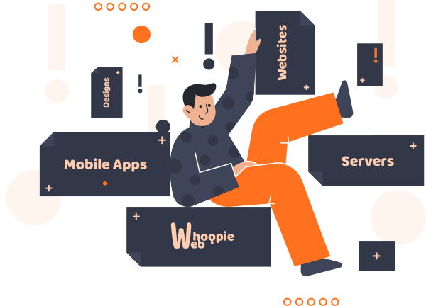

<div class="wrapper">

    <div class="article about-text">
        <span class="title">
            From Passion to Purpose: My Digital Journey
        </span>
        <span class="description">
            My journey into tech began with a simple desire: to create meaningful digital experiences that connect and inspire. I started by developing websites and applications, gradually expanding my skills and expertise to include not only front-end design but also robust back-end systems and server management. From freelance beginnings to leading complex projects with teams, I've honed a deep understanding of building dynamic, responsive applications and managing the infrastructure that supports them. Each project I take on is an opportunity to craft something unique, blending creativity with technical precision to deliver results that drive growth and captivate audiences. Today, I’m dedicated to transforming ideas into digital solutions that stand out in an ever-evolving world.
        </span>
    </div>
    
</div>